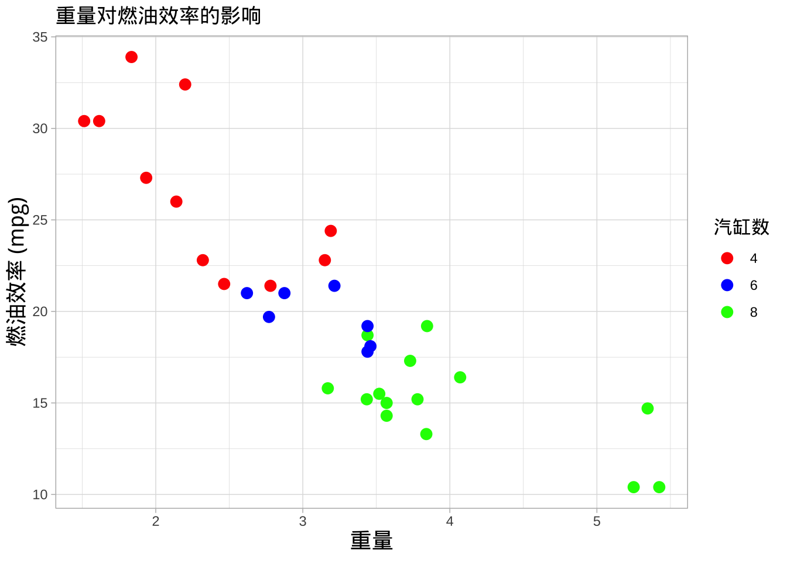
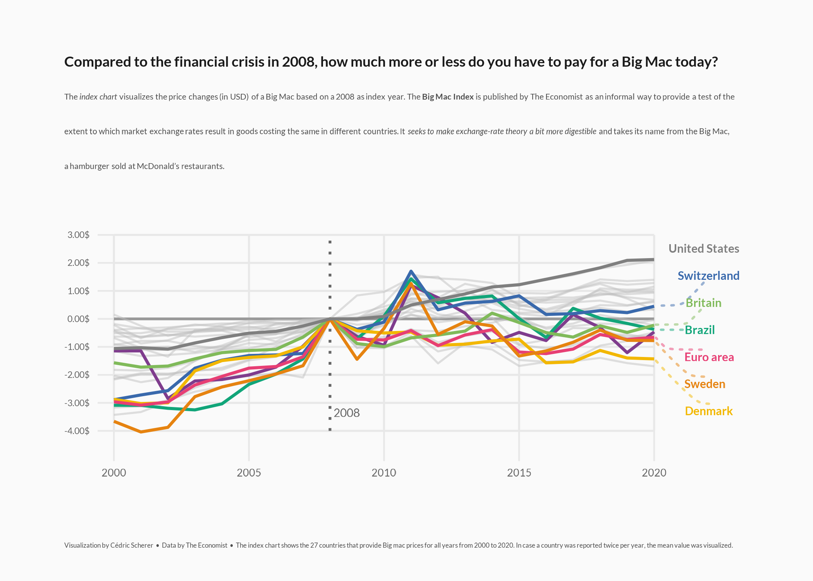
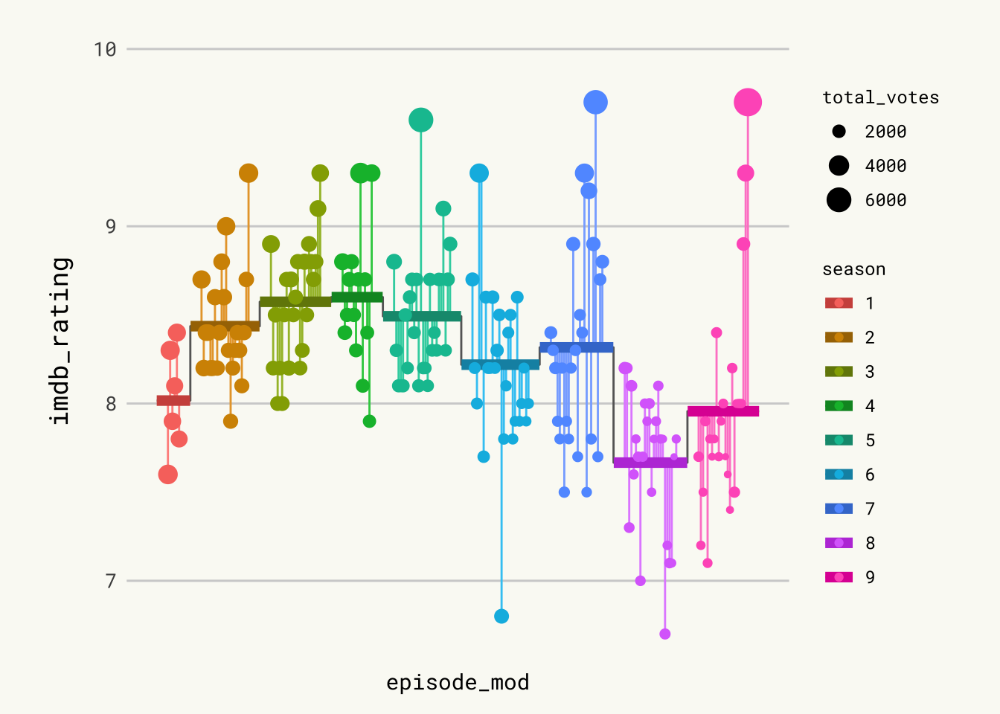
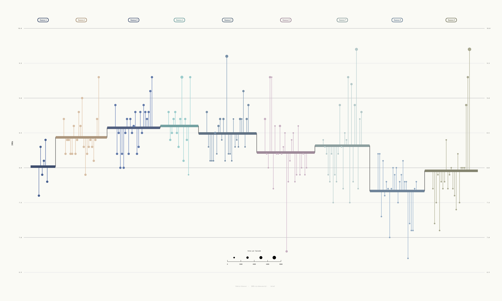
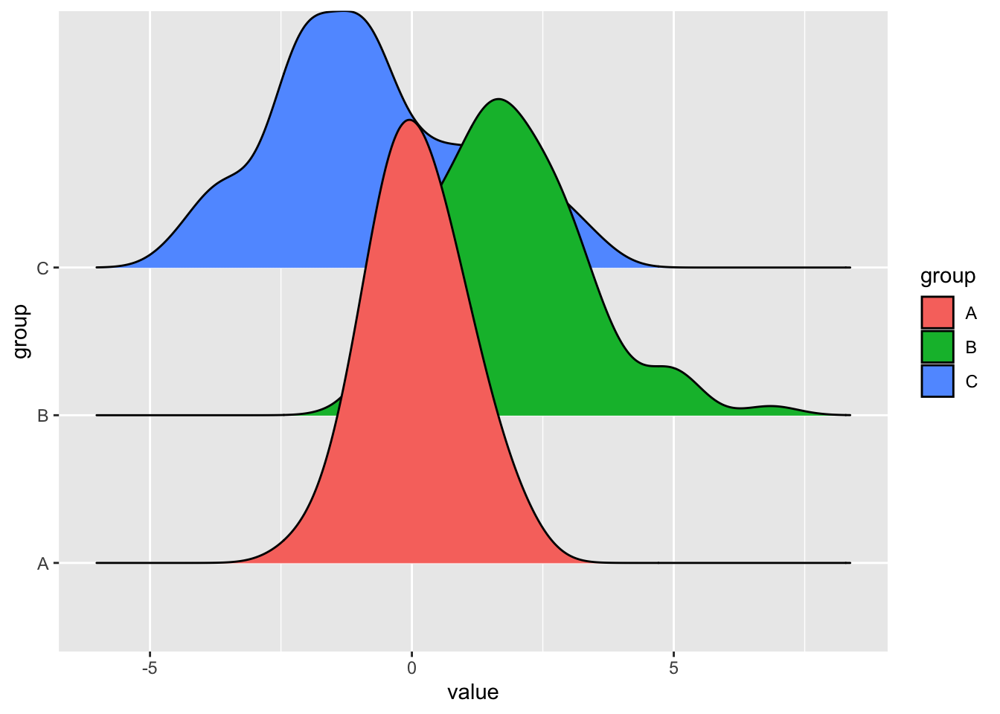
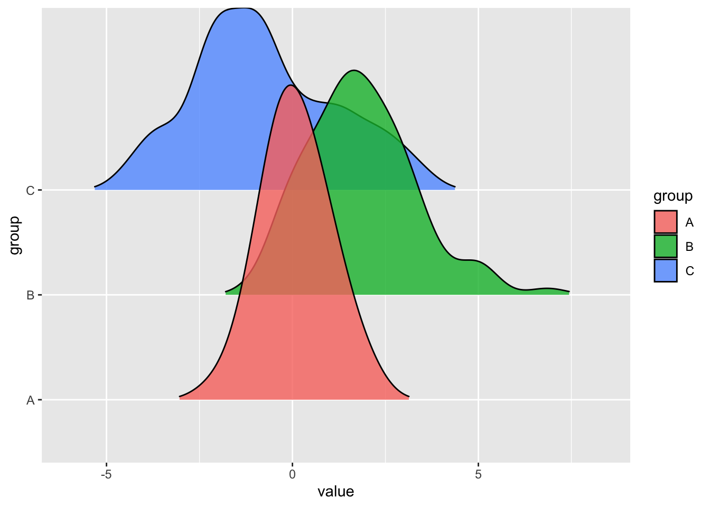

Chapter 6 高质量数据可视化案例
6.1 带有标签的线图
## ── Attaching core tidyverse packages ──────────────────────── tidyverse 2.0.0 ──
## ✔ dplyr 1.1.4 ✔ readr 2.1.4
## ✔ forcats 1.0.0 ✔ stringr 1.5.1
## ✔ ggplot2 3.4.4 ✔ tibble 3.2.1
## ✔ lubridate 1.9.3 ✔ tidyr 1.3.0
## ✔ purrr 1.0.2
## ── Conflicts ────────────────────────────────────────── tidyverse_conflicts() ──
## ✖ dplyr::filter() masks stats::filter()
## ✖ dplyr::lag() masks stats::lag()
## ℹ Use the conflicted package (<http://conflicted.r-lib.org/>) to force all conflicts to become errors## Loading required package: sysfonts
## Loading required package: showtextdb加载并准备数据集 今天的图表可视化了 Big Mac 的价格变化（以美元计） ，基准年份为2008年。数据的原始来源是《经济学人》，但本文基于2020-12-22周的 TidyTuesday 项目版本。您可以在这里找到原始公告和有关数据的更多信息。
## Rows: 1386 Columns: 19
## ── Column specification ────────────────────────────────────────────────────────
## Delimiter: ","
## chr (3): iso_a3, currency_code, name
## dbl (15): local_price, dollar_ex, dollar_price, usd_raw, eur_raw, gbp_raw, ...
## date (1): date
##
## ℹ Use `spec()` to retrieve the full column specification for this data.
## ℹ Specify the column types or set `show_col_types = FALSE` to quiet this message.数据加载完成后，就该为绘图准备数据了。
df_mac <- df_mac_raw %>%
# 提取年份
mutate(year = lubridate::year(date)) %>%
# 子集变量
select(date, year, iso_a3, currency_code, name, dollar_price) %>%
# 如果每年/每个国家有多条记录，则使用平均值
group_by(iso_a3, name, year) %>%
summarize(price = mean(dollar_price)) %>%
# 保留具有过去21年（从2000年到2020年，包括在内）记录的国家/地区
group_by(iso_a3) %>%
filter(n() == 21)## `summarise()` has grouped output by 'iso_a3', 'name'. You can override using
## the `.groups` argument.# 还定义了要突出显示的国家组
highlights <- c("EUZ", "CHE", "DNK", "SWE", "BRA", "ARG", "GBR", "USA")
n <- length(highlights)接下来，重要的是确保图表仅显示具有2008年 Big Mac Index 的国家。给定国家在某一时刻的价格指数是该时刻价格与该国2008年价格之间的差异。
countries <- df_mac %>%
filter(year == 2008) %>%
pull(iso_a3)
df_mac_indexed_2008 <- df_mac %>%
# 保留具有2008年记录的国家，即基准年。
group_by(iso_a3) %>%
filter(iso_a3 %in% countries) %>%
# 计算`price_index`
mutate(
ref_year = 2008,
price_index = price[which(year == 2008)],
price_rel = price - price_index,
# 创建 'group'，用于着色线条。
group = if_else(iso_a3 %in% highlights, iso_a3, "other"),
group = as.factor(group)
) %>%
mutate(
group = fct_relevel(group, "other", after = Inf),
name_lab = if_else(year == 2020, name, NA_character_)
) %>%
ungroup()主题定义 这次，在创建图表之前定义了主题。请查看下面代码中的注释，以更好地理解这里发生的情况。
theme_set(theme_minimal(base_family = "Lato"))
theme_update(
# 删除 x 轴和 y 轴的标题
axis.title = element_blank(),
# 轴标签为灰色
axis.text = element_text(color = "grey40"),
# x 和 y 轴的标签大小不同。
axis.text.x = element_text(size = 20, margin = margin(t = 5)),
axis.text.y = element_text(size = 17, margin = margin(r = 5)),
# 刻度线为非常浅的灰色
axis.ticks = element_line(color = "grey91", size = .5),
# 增加刻度线的长度。
axis.ticks.length.x = unit(1.3, "lines"),
axis.ticks.length.y = unit(.7, "lines"),
# 删除 ggplot2 默认带有的网格线
panel.grid = element_blank(),
# 自定义边缘值（顶部，右侧，底部，左侧）
plot.margin = margin(20, 40, 20, 40),
# 使用浅灰色为图和面板背景
plot.background = element_rect(fill = "grey98", color = "grey98"),
panel.background = element_rect(fill = "grey98", color = "grey98"),
# 自定义标题外观
plot.title = element_text(
color = "grey10",
size = 28,
face = "bold",
margin = margin(t = 15)
),
# 自定义子标题外观
plot.subtitle = element_markdown(
color = "grey30",
size = 16,
lineheight = 1.35,
margin = margin(t = 15, b = 40)
),
# 标题和说明将对齐
plot.title.position = "plot",
plot.caption.position = "plot",
plot.caption = element_text(
color = "grey30",
size = 13,
lineheight = 1.2,
hjust = 0,
margin = margin(t = 40) # 大间距在说明的顶部。
),
# 删除图例
legend.position = "none
"
)## Warning: The `size` argument of `element_line()` is deprecated as of ggplot2 3.4.0.
## ℹ Please use the `linewidth` argument instead.
## This warning is displayed once every 8 hours.
## Call `lifecycle::last_lifecycle_warnings()` to see where this warning was
## generated.您是否在上面的 plot.subtitle() 中看到了 element_markdown()？该函数随 ggtext() 包提供，并且可以使用 markdown 语法格式化文本。就像魔法一样！
基本图表 今天的图表是一个线图，可视化了 Big Mac 的价格变化（以美元计） ，基准年份为2008年。在高亮显示的向量中的国家有不同的颜色，以突出显示其在时间轴上的演变。听起来很令人兴奋，让我们开始吧！
plt <- ggplot(
# ggplot 对象已将高亮显示的国家的数据关联起来
df_mac_indexed_2008 %>% filter(group != "other"),
aes(year, price_rel, group = iso_a3)
) +
# 几何注释，起到网格线的作用
geom_vline(
xintercept = seq(2000, 2020, by = 5),
color = "grey91",
size = .6
) +
geom_segment(
data = tibble(y = seq(-4, 3, by = 1), x1 = 2000, x2 = 2020),
aes(x = x1, xend = x2, y = y, yend = y),
inherit.aes = FALSE,
color = "grey91",
size = .6
) +
geom_segment(
data = tibble(y = 0, x1 = 2000, x2 = 2020),
aes(x = x1, xend = x2, y = y, yend = y),
inherit.aes = FALSE,
color = "grey60",
size = .8
) +
geom_vline(
aes(xintercept = ref_year),
color = "grey40",
linetype = "dotted",
size = .8
) +
## 非高亮显示的国家的线条
geom_line(
data = df_mac_indexed_2008 %>% filter(group == "other"),
color = "grey75",
size = .6,
alpha = .5
) +
## 高亮显示的国家的线条。
# 重要的是将它们放在灰色线条之后，
# 以便着色的线条位于顶部
geom_line(
aes(color = group),
size = .9
)## Warning: Using `size` aesthetic for lines was deprecated in ggplot2 3.4.0.
## ℹ Please use `linewidth` instead.
## This warning is displayed once every 8 hours.
## Call `lifecycle::last_lifecycle_warnings()` to see where this warning was
## generated.
这是一个不错的开端！为一些国家使用不同的颜色绝对可以让人更容易追踪其价格指数的演变。
添加不重叠的标签 虽然颜色是很大的帮助，但它们并不透露线条代表哪个国家。在每条线的末端添加一个标签，告诉它代表的是哪个国家，这样不是很好吗？
在图上添加许多标签是非常具有挑战性的，因为标签往往会重叠在一起，使图表难以阅读。幸运的是，ggrepel 包可以帮助我们。它提供了一个算法，可以自动为我们定位标签。让我们来做吧！
plt <- plt +
annotate(
"text", x = 2008.15, y = -3.35,
label = "2008",
family = "Lato",
size = 8,
color = "grey40",
hjust = 0
) +
geom_text_repel(
aes(color = group, label = name_lab),
family = "Lato",
fontface = "bold",
size = 8,
direction = "y",
xlim = c(2020.8, NA),
hjust = 0,
segment.size = .7,
segment.alpha = .5,
segment.linetype = "dotted",
box.padding = .4,
segment.curvature = -0.1,
segment.ncp = 3,
segment.angle = 20
) +
## 坐标系 + 刻度
coord_cartesian(
clip = "off",
ylim = c(-4, 3)
) +
scale_x_continuous(
expand = c(0, 0),
limits = c(2000, 2023.5),
breaks = seq(2000, 2020, by = 5)
) +
scale_y_continuous(
expand = c(0, 0),
breaks = seq(-4, 3, by = 1),
labels = glue::glue("{format(seq(-4, 3, by = 1), nsmall = 2)}$")
)
plt ## Warning: Removed 160 rows containing missing values (`geom_text_repel()`).
太棒了！几个注释就能极大地提高图表的可读性。
最终图表 上面的图表已经非常接近发布准备就绪的状态。现在需要的是一个更好的颜色调色板来改善图表的外观，并且需要一些好的注释来使图表更有见地：
plt <- plt +
scale_color_manual(
values = c(rcartocolor::carto_pal(n = n, name = "Bold")[1:n-1], "grey50")
) +
labs(
title = "Compared to the financial crisis in 2008, how much more or less do you have to pay for a Big Mac today?",
subtitle = "The <i>index chart</i> visualizes the price changes (in USD) of a Big Mac based on a 2008 as index year. The <b>Big Mac Index</b> is published by The Economist as an informal way to provide a test of the<br>extent to which market exchange rates result in goods costing the same in different countries. It <i>seeks to make exchange-rate theory a bit more digestible</i> and takes its name from the Big Mac,<br>a hamburger sold at McDonald's restaurants.",
caption = "Visualization by Cédric Scherer • Data by The Economist • The index chart shows the 27 countries that provide Big mac prices for all years from 2000 to 2020. In case a country was reported twice per year, the mean value was visualized."
)
ggsave("plt.png",plt)## Saving 7 x 5 in image## Warning: Removed 160 rows containing missing values (`geom_text_repel()`).## Warning: ggrepel: 1 unlabeled data points (too many overlaps). Consider
## increasing max.overlaps现在这个图表已经准备 
6.2 办公室评级
为了构建图形，通常需要加载多个包。这次我们还通过font_add_google()函数从Google导入了一些字体。最后，我们调用showtext_auto()函数来指示我们在图表中使用showtext来绘制文本。
##
## Attaching package: 'cowplot'## The following object is masked from 'package:lubridate':
##
## stamplibrary(showtext)
showtext_auto()
# 添加来自Google的字体。
font_add_google("Roboto Mono", "Roboto Mono")
font_add_google("Open Sans", "Open Sans")
font_add_google("Special Elite", "Special Elite")
# 设置ggplot主题
theme_set(theme_minimal(base_family = "Roboto Mono"))
theme_update(
plot.background = element_rect(fill = "#fafaf5", color = "#fafaf5"),
panel.background = element_rect(fill = NA, color = NA),
panel.border = element_rect(fill = NA, color = NA),
panel.grid.major.x = element_blank(),
panel.grid.minor = element_blank(),
axis.text.x = element_blank(),
axis.text.y = element_text(size = 10),
axis.ticks = element_blank(),
axis.title.y = element_text(size = 13, margin = margin(r = 10)),
legend.title = element_text(size = 9),
plot.caption = element_text(
family = "Special Elite",
size = 10,
color = "grey70",
face = "bold",
hjust = .5,
margin = margin(5, 0, 20, 0)
),
plot.margin = margin(10, 25, 10, 25)
)
# 开启showtext
showtext_auto()有关使用ggplot2自定义字体的更多信息，请访问这篇专门的博客文章
6.2.1 加载和准备数据集
今天我们将创建一个高度定制的棒棒糖图，来可视化电视节目《办公室》(美国版)每一集的IMDB评分。数据最初来自schrute R包和data.world，但我们使用的是在2020-03-17的TidyTuesday倡议中发布的版本。您可以在这里找到原始公告和有关数据的更多信息。
首先，我们读取数据集并查看前几行以熟悉数据。
## Rows: 188 Columns: 6
## ── Column specification ────────────────────────────────────────────────────────
## Delimiter: ","
## chr (1): title
## dbl (4): season, episode, imdb_rating, total_votes
## date (1): air_date
##
## ℹ Use `spec()` to retrieve the full column specification for this data.
## ℹ Specify the column types or set `show_col_types = FALSE` to quiet this message.## # A tibble: 6 × 6
## season episode title imdb_rating total_votes air_date
## <dbl> <dbl> <chr> <dbl> <dbl> <date>
## 1 1 1 Pilot 7.6 3706 2005-03-24
## 2 1 2 Diversity Day 8.3 3566 2005-03-29
## 3 1 3 Health Care 7.9 2983 2005-04-05
## 4 1 4 The Alliance 8.1 2886 2005-04-12
## 5 1 5 Basketball 8.4 3179 2005-04-19
## 6 1 6 Hot Girl 7.8 2852 2005-04-26从数据中包含的所有列中，我们使用季节（season），集数（episode），IMDB评分（imdb_rating）和用于每个评分的投票数（total_votes）。
我们首先计算每个季节的平均评分。观察结果按季节和集数排列，以确保row_number()表示集数，而不考虑季节。将季节（season）突变为因子类型，以便ggplot2将其识别为离散变量而不是数值变量。
df_office_avg <-
df_office %>%
arrange(season, episode) %>%
mutate(episode_id = row_number()) %>%
group_by(season) %>%
mutate(
avg = mean(imdb_rating),
episode_mod = episode_id + (9 * season),
mid = mean(episode_mod)
) %>%
ungroup() %>%
mutate(season = factor(season))现在我们构造用于绘制每季度平均评分的水平线的数据框。这个数据框还包括我们需要的值，以便在x和y上添加连接相邻季节的平均评分的线。
df_lines <-
df_office_avg %>%
group_by(season) %>%
summarize(
start_x = min(episode_mod) - 5,
end_x = max(episode_mod) + 5,
y = unique(avg)
) %>%
pivot_longer(
cols = c(start_x, end_x),
names_to = "type",
values_to = "x"
) %>%
mutate(
x_group = if_else(type == "start_x", x + .1, x - .1),
x_group = if_else(type == "start_x" & x == min(x), x_group - .1, x_group),
x_group = if_else(type == "end_x" & x == max(x), x_group + .1, x_group)
)6.2.2 第一个棒棒糖图版本
让我们构建图表。我们以逐步方式进行，添加注释以解释我们每次添加的内容。
# 首先是用作比例参考的水平线。它们首先添加以确保它们保持在背景中。
p <- df_office_avg %>%
ggplot(aes(episode_mod, imdb_rating)) +
geom_hline(
data = tibble(y = 7:10),
aes(yintercept = y),
color = "grey82",
size = .5
)
# 添加垂直线段。
# 这些表示每集的评分与其所属季节的平均评分的偏差。
p <- p +
geom_segment(
aes(
xend = episode_mod,
yend = avg,
color = season,
color = after_scale(colorspace::lighten(color, .2))
)
)## Warning: Duplicated aesthetics after name standardisation: colour# 添加线条和点。
# 这些表示每个季节的平均评分。
# 点标记每集的评分，其大小由投票数确定。
p <- p +
geom_line(
data = df_lines,
aes(x, y),
color = "grey40"
) +
geom_line(
data = df_lines,
aes(
x_group,
y,
color = season,
color = after_scale(colorspace::darken(color, .2))
),
size = 2.5
) +
geom_point(
aes(size = total_votes, color = season)
) ## Warning: Duplicated aesthetics after name standardisation: colour
这是一个不错的开始。让我们让它变得更好。
6.2.3 添加标签和调整比例
值得注意的是，看起来不连贯的灰色垂直线是如何添加的。实际上，这只是一个灰色线，其值表示平均评分。最后，由于不同季节平均评分之间的跳跃以及在水平部分覆盖它的较粗线，它看起来像几条不连续的垂直线。
# 在顶部添加标签。
# 它们指示季节，并使我们无需使用图例。
p <- p +
geom_label(
aes(
mid,
10.12, # 标签的垂直位置
label = glue::glue(" Season {season} "),
color = season,
color = after_scale(colorspace::darken(color, .2))
),
fill = NA,
family = "Special Elite",
fontface = "bold",
label.padding = unit(.2, "lines"),
label.r = unit(.25, "lines"), # 圆角的半径
label.size = .5
) ## Warning: Duplicated aesthetics after name standardisation: colour# 自定义比例尺和标签。
# 用更好看的调色板覆盖默认颜色。
p <- p +
scale_x_continuous(expand = c(.015, .015)) +
scale_y_continuous(
expand = c(.03, .03),
limits = c(6.5, 10.2),
breaks = seq(6.5, 10, by = .5),
sec.axis = dup_axis(name = NULL)
) +
scale_color_manual(
values = c("#486090", "#D7BFA6", "#6078A8", "#9CCCCC", "#7890A8",
"#C7B0C1", "#B5C9C9", "#90A8C0", "#A8A890"),
guide = FALSE # 不显示颜色比例尺的图例。
) +
scale_size_binned(name = "Votes per Episode", range = c(.3, 3)) +
labs(
x = NULL,
y = "IMDb评分",
caption = "可视化由Cédric Scherer制作 • 数据来源：IMDb via data.world • 粉丝艺术设计：ArieS"
) +
guides(
size = guide_bins(
show.limits = TRUE,
direction = "horizontal",
title.position = "top",
title.hjust = .5
)
) +
theme(
legend.position = c(.5, .085),
legend.key.width = unit(2, "lines")
)6.2.4 保存
使用通常的ggsave函数将图表保存为pdf格式：
## Warning: The `guide` argument in `scale_*()` cannot be `FALSE`. This was deprecated in
## ggplot2 3.3.4.
## ℹ Please use "none" instead.
## This warning is displayed once every 8 hours.
## Call `lifecycle::last_lifecycle_warnings()` to see where this warning was
## generated. 这篇文章介绍了如何使用R和ggplot2创建高度定制的棒棒糖图来可视化《办公室》(美国版)的IMDB评分。我们从加载和准备数据开始，然后构建图表，并最终添加标签、调整比例和保存图表。通过这个过程，我们展示了如何使用ggplot2以及一些其他有用的包来创建专业水平的可视化。
6.3 贪污感知指数
在构建图表之前，通常需要先加载一些包。ggrepel提供了用于ggplot2的几何对象，用于排斥重叠的文本标签。文本标签会自动远离彼此、远离数据点和远离绘图区域的边缘。此外，加载colorspace以使用其函数darken()，cowplot贡献了其内置主题theme_minimal_hgrid()。
加载和准备数据集 今天的图表使用了practicalgg包中的corruption数据集。这个数据包含了176个国家从2012年到2015年的腐败感知指数（CPI）和人类发展指数（HDI）的信息。
原始来源是透明国际发布的2016年腐败感知指数和联合国开发计划署的人类发展报告中提供的人类发展指数。这些数据集被合并并作为Claus O. Wilke在他的practicalgg包中提供的corruption数据集。感谢Claus的所有工作和使这一切成为可能！
下面的代码加载数据，仅保留2015年的观测值，并删除包含缺失值的任何行。
# remotes::install_github("wilkelab/practicalgg")
corrupt <- practicalgg::corruption %>%
filter(year == 2015) %>%
na.omit()接下来，将较长的地区名称拆分为多行，以便它们更好地适合图例中的顶部区域。
corrupt <- corrupt %>%
mutate(
region = case_when(
region == "Middle East and North Africa" ~ "Middle East\nand North Africa",
region == "Europe and Central Asia" ~ "Europe and\nCentral Asia",
region == "Sub Saharan Africa" ~ "Sub-Saharan\nAfrica",
TRUE ~ region # All the other remain the same
)
)最后，我们添加一个新变量，label，其中包含一些选定国家的名称。这些国家将使用ggrepel包中的geom_text_repel()函数添加到图表中，该函数会自动调整它们的位置以避免重叠。
country_highlight <- c(
"Germany", "Norway", "United States", "Greece", "Singapore", "Rwanda",
"Russia", "Venezuela", "Sudan", "Iraq", "Ghana", "Niger", "Chad", "Kuwait",
"Qatar", "Myanmar", "Nepal", "Chile", "Argentina", "Japan", "China"
)
corrupt <- corrupt %>%
mutate(
label = ifelse(country %in% country_highlight, country, "")
)这就是数据准备步骤！现在让我们来构建图表吧！
构建图表 与本系列中的其他指南不同，本文直奔主题，在单个代码块中构建图表。原始文档已经是构建此图表的一个优秀逐步指南。仍然在代码中添加了一些注释，以解释某些行中发生的情况。
# Okabe Ito颜色
# 最后一种颜色用于回归拟合。
region_cols <- c("#E69F00", "#56B4E9", "#009E73", "#F0E442", "#0072B2", "#999999")
ggplot(corrupt, aes(cpi, hdi)) +
# 在点之前添加回归拟合以确保线条保持在点的后面。
geom_smooth(
aes(color = "y ~ log(x)", fill = "y ~ log(x)"),
method = "lm",
formula = y~log(x),
se = FALSE, # 仅绘制线条（不包括置信区间）
fullrange = TRUE # 拟合跨越水平轴的整个范围
) +
geom_point(
aes(color = region, fill = region),
size = 2.5, alpha = 0.5,
shape = 21 # 这是一个同时具有边框（颜色）和填充的点。
) +
# 添加自动定位的文本
geom_text_repel(
aes(label = label),
color = "black",
size = 9/.pt, # 字体大小9 pt
point.padding = 0.1,
box.padding = 0.6,
min.segment.length = 0,
max.overlaps = 1000,
seed = 7654 # 为了可重复性
) +
scale_color_manual(
name = NULL, # 忽略图例标题的一种方式
values = darken(region_cols, 0.3) # 点的边框比填充要深
) +
scale_fill_manual(
name = NULL,
values = region_cols
) +
# 添加标签并自
# 定义轴
scale_x_continuous(
name = "2015年腐败感知指数（100 = 最不腐败）",
limits = c(10, 95),
breaks = c(20, 40, 60, 80, 100),
expand = c(0, 0) # 这会删除轴端的默认填充
) +
scale_y_continuous(
name = "2015年人类发展指数\n(1.0 = 最发达)",
limits = c(0.3, 1.05),
breaks = c(0.2, 0.4, 0.6, 0.8, 1.0), # 手动设置轴断点
expand = c(0, 0)
) +
# 覆盖默认图例外观
guides(
color = guide_legend(
# 所有键放在同一行。
nrow = 1,
override.aes = list(
# 0表示没有线条，1表示实线
# 结果是5个没有线条的键和1个有线条的键
linetype = c(rep(0, 5), 1),
# 现在，5个具有标记号21的键（在绘图中使用的标记号）
# 和1个不带此标记的键。
shape = c(rep(21, 5), NA)
)
)
) +
# 最小网格主题，只绘制水平线
theme_minimal_hgrid(12, rel_small = 1) +
# 自定义图例的各个方面
theme(
legend.position = "top",
legend.justification = "right",
legend.text = element_text(size = 9),
legend.box.spacing = unit(0, "pt")
)
这就是这个图表的全部内容！通过这个例子，我们展示了如何使用ggplot2和其他一些有用的包来创建专业水平的可视化。
6.4 每小时热力图
#devtools::install_github("cran/Interpol.T")
library(ggplot2)
library(dplyr) # 更容易地进行数据整理
library(viridis) # 适合色盲的调色板，也适用于黑白图## Loading required package: viridisLite## Loading required package: date## Loading required package: chron##
## Attaching package: 'chron'## The following objects are masked from 'package:lubridate':
##
## days, hours, minutes, seconds, yearslibrary(lubridate) # 用于简单的日期处理
library(ggExtra) # 因为我记不住ggplot主题选项
library(tidyr)
data <- data(Trentino_hourly_T, package = "Interpol.T")
names(h_d_t)[1:5] <- c("stationid", "date", "hour", "temp", "flag")
df <- tbl_df(h_d_t) %>%
filter(stationid == "T0001")## Warning: `tbl_df()` was deprecated in dplyr 1.0.0.
## ℹ Please use `tibble::as_tibble()` instead.
## Call `lifecycle::last_lifecycle_warnings()` to see where this warning was
## generated.## Warning: There were 3 warnings in `mutate()`.
## The first warning was:
## ℹ In argument: `year = year(date)`.
## Caused by warning:
## ! tz(): Don't know how to compute timezone for object of class factor; returning "UTC".
## ℹ Run `dplyr::last_dplyr_warnings()` to see the 2 remaining warnings.df$date <- ymd(df$date) # 如果需要进一步处理数据，则有用
# 清理
rm(list = c("h_d_t", "mo_bias", "Tn", "Tx",
"Th_int_list", "calibration_l",
"calibration_shape", "Tm_list"))
# 创建绘图数据框
df <- df %>% select(stationid, day, hour, month, year, temp) %>%
fill(temp) # 可选 - 参见下面的注释
statno <- unique(df$stationid)
# 绘图从这里开始
p <- ggplot(df, aes(day, hour, fill = temp)) +
geom_tile(color = "white", size = 0.1) +
scale_fill_viridis(name = "Hrly Temps C", option = "C")
p <- p + facet_grid(year ~ month)
p <- p + scale_y_continuous(trans = "reverse", breaks = unique(df$hour))
p <- p + scale_x_continuous(breaks = c(1, 10, 20, 31))
p <- p + theme_minimal(base_size = 8)
p <- p + labs(title = paste("Hourly Temps - Station", statno), x = "Day", y = "Hour Commencing")
p <- p + theme(legend.position = "bottom") +
theme(plot.title = element_text(size = 14)) +
theme(axis.text.y = element_text(size = 6)) +
theme(strip.background = element_rect(colour = "white")) +
theme(plot.title = element_text(hjust = 0)) +
theme(axis.ticks = element_blank()) +
theme(axis.text = element_text(size = 7)) +
theme(legend.title = element_text(size = 8)) +
theme(legend.text = element_text(size = 6)) +
removeGrid() # ggExtra
# 在此之前，您可能需要扩展绘图屏幕！
p # 真棒
6.5 小倍数线图
这个图是一个小的多线图。它显示了一个指标(世界各地的消费者信心)在过去几年的演变。小倍数的每个项目都反映了一个特定国家的演变情况。
##
## Attaching package: 'janitor'## The following objects are masked from 'package:stats':
##
## chisq.test, fisher.test##
## Attaching package: 'patchwork'## The following object is masked from 'package:cowplot':
##
## align_plotslibrary(gghighlight)
# 加载和准备数据
# 数据托管在R图库的github页面上。你可以查看原始文章了解更多，因为我们这里只涵盖了图表创建的技术部分。
df1 <- read.csv("dataConsumerConfidence.csv") %>%
mutate(date = lubridate::my(Time)) %>%
select(-Time) %>%
pivot_longer(!date, names_to = "country", values_to = "value") %>%
na.omit()
# 杂项
# 有一堆小工具将在后面用到：字体、主题、颜色、说明。所有这些都是制作专业图表所需的。
font <- "Gudea"
font_add_google(family = font, font, db_cache = TRUE)
fa_path <- systemfonts::font_info(family = "Font Awesome 6 Brands")[["path"]]
font_add(family = "fa-brands", regular = fa_path)
theme_set(theme_minimal(base_family = font, base_size = 10))
bg <- "#F4F5F1"
txt_col <- "black"
showtext_auto(enable = TRUE)
caption_text <- str_glue("**设计:** Gilbert Fontana<br>", "**数据:** OECD, 2022")
# 主要折线图
# 在ggplot2中将图表从直角坐标转换为圆形（极坐标）是很容易的，只需在绘图中添加coord_polar()调用即可。
p1 <- df1 %>%
ggplot() +
geom_hline(yintercept = 100, linetype = "solid", size = .25) +
geom_point(data = df1 %>%
group_by(country) %>%
slice_max(date),
aes(x = date, y = value, color = country), shape = 16) +
geom_line(aes(x = date, y = value, color = country)) +
gghighlight(use_direct_label = FALSE,
unhighlighted_params = list(colour = alpha("grey85", 1))) +
geom_text(data = df1 %>%
group_by(country) %>%
slice_max(date),
aes(x = date, y = value, color = country, label = round(value)),
hjust = -.5, vjust = .5, size = 2.5, family = font, fontface = "bold") +
scale_color_met_d(name = "Redon") +
scale_x_date(date_labels = "%y") +
scale_y_continuous(breaks = c(90, 95, 100, 105, 110),
labels = c("", "", "100", "", "")) +
facet_wrap(~ factor(country, levels = c('USA', 'China', 'Japan', 'Germany', 'UK', 'France', 'Italy', 'South Korea', 'Australia'))) +
coord_cartesian(clip = "off") +
theme(
axis.title = element_blank(),
axis.text = element_text(color = txt_col, size = 7),
strip.text.x = element_text(face = "bold"),
plot.title = element_markdown(hjust = .5, size = 34, color = txt_col, lineheight = .8, face = "bold", margin = margin(20, 0, 30, 0)),
plot.subtitle = element_markdown(hjust = .5, size = 18, color = txt_col, lineheight = 1, margin = margin(10, 0, 30, 0)),
plot.caption = element_markdown(hjust = .5, margin = margin(60, 0, 0, 0), size = 8, color = txt_col, lineheight = 1.2),
plot.caption.position = "plot",
plot.background = element_rect(color = bg, fill = bg),
plot.margin = margin(10, 10, 10, 10),
legend.position = "none",
legend.title = element_text(face = "bold")
)
# 标题和副标题
# 最后一步：添加标题和副标题以获得完整的图表：
text <- tibble(
x = 0, y = 0,
label = "The consumer confidence indicator provides an indication of future developments of households’ consumption and saving. An indicator above 100 signals a boost in the consumers’ confidence towards the future economic situation. Values below 100 indicate a pessimistic attitude towards future developments in the economy, possibly resulting in a tendency to save more and consume less. During 2022, the consumer confidence indicators have declined in many major economies around the world.<br>"
)
sub <- ggplot(text, aes(x = x, y = y)) +
geom_textbox(
aes(label = label),
box.color = bg, fill = bg, width = unit(10, "lines"),
family = font, size = 3, lineheight = 1
) +
coord_cartesian(expand = FALSE, clip = "off") +
theme_void() +
theme(plot.background = element_rect(color = bg, fill = bg))
text2 <- tibble(
x = 0, y = 0,
label = "**Consumer Confidence Around the World**<br>"
)
title <- ggplot(text2, aes(x = x, y = y)) +
geom_textbox(
aes(label = label),
box.color = bg, fill = bg, width = unit(12,
"lines"),
family = font, size = 10, lineheight = 1
) +
coord_cartesian(expand = FALSE, clip = "off") +
theme_void() +
theme(plot.background = element_rect(color = bg, fill = bg))
finalPlot <- (title + sub) / p1 +
plot_layout(heights = c(1, 2)) +
plot_annotation(
caption = caption_text,
theme = theme(plot.caption = element_markdown(hjust = 0, margin = margin(20, 0, 0, 0), size = 6, color = txt_col, lineheight = 1.2),
plot.margin = margin(20, 20, 20, 20))
)
# # 保存图表
# ggsave("consumer_confidence.png",finalPlot,
# bg = bg,
# height = 8,
# width = 5,
# dpi = 600)
#
# finalPlot